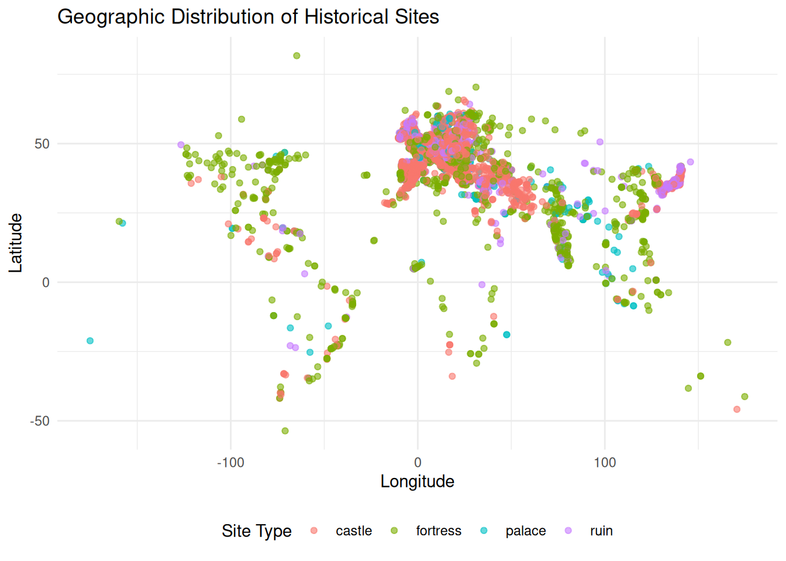
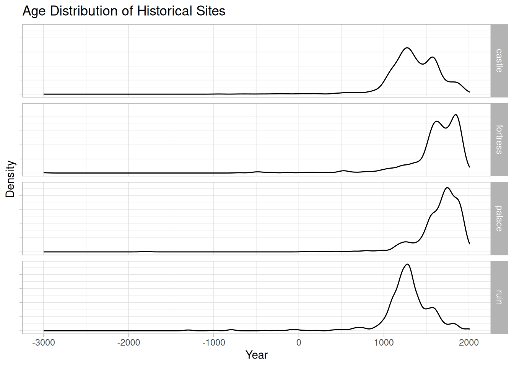

Tidy Tuesday: Predicting Castles, Fortresses, and Palaces
Using tidymodels to classify historical sites based on their age and location.
R
TidyTuesday
tidymodels
machine-learning
Author
Mark
Published
September 1, 2026
Introduction
This week’s Tidy Tuesday dataset features world castles, fortresses, palaces, and ruins. These historical structures span centuries and continents. In this post, we’ll build a predictive model to classify the type of site using its latitude and longitude and the year it was constructed or first documented. Both geography and year help us pinpoint the specific civilization as well as whether we are at nearer the rise or collapse of that civilization and therefore, whether it is likely to be a ruin.
We will use the tidymodels framework in R to build a random forest classifier.
Loading the Data
Let’s start by loading the necessary libraries and the dataset.
qid name category year lat lon
1 Q12501 Great Wall of China fortress -700 40.43139 116.56444
2 Q2946 Palace of Versailles palace 1661 48.80472 2.12028
3 Q80290 Forbidden City palace 1420 39.91583 116.39083
4 Q1143049 Château de Montsoreau castle 990 47.21560 0.06220
5 Q131013 Acropolis of Athens fortress -500 37.97167 23.72611
6 Q133274 Kremlin fortress 1420 55.75167 37.61778
Exploratory Data Analysis
Before building the model, let’s visualize the distribution of our historical sites.
ggplot(sites, aes(x = lon, y = lat, color = category)) +geom_point(alpha =0.6) +labs(title ="Geographic Distribution of Historical Sites",x ="Longitude",y ="Latitude",color ="Site Type") +theme_minimal() +theme(legend.position ="bottom")

It looks like there is some geographical concentration of various site types.
And let’s look at the distribution of the construction year by site type.
ggplot(sites, aes(x = year)) +geom_density(alpha =1) +labs(title ="Age Distribution of Historical Sites",x ="Year",y ="Density") +facet_grid(rows =vars(category)) +theme(axis.text.y =element_blank())

It looks like castles and ruins tend to older than fortresses and palaces.
Our recipe is simple: we’ll predict category using all other variables. We’ll use a random forest model.
site_rec <-recipe(category ~ year + lat + lon, data = site_train)rf_spec <-rand_forest(trees =500, min_n =tune(), mtry =tune()) |>set_engine("ranger", importance ="impurity") |>set_mode("classification")site_wf <-workflow() |>add_recipe(site_rec) |>add_model(rf_spec)
Tuning the Model
Let’s tune the hyperparameters of our random forest.
rf_res <-tune_grid( site_wf,resamples = site_folds,grid =10,control =control_grid(save_pred =TRUE))# Select the best model based on accuracybest_rf <-select_best(rf_res, metric ="accuracy")# Finalize the workflowfinal_wf <-finalize_workflow(site_wf, best_rf)
Final Evaluation
Now, let’s fit our final model to the training data and evaluate it on the testing set.
In this post, we demonstrated how to use the tidymodels framework to classify historical sites based on their location and age. While our model might benefit from additional historical features, it shows how easily geographic and temporal data can be modeled in R.